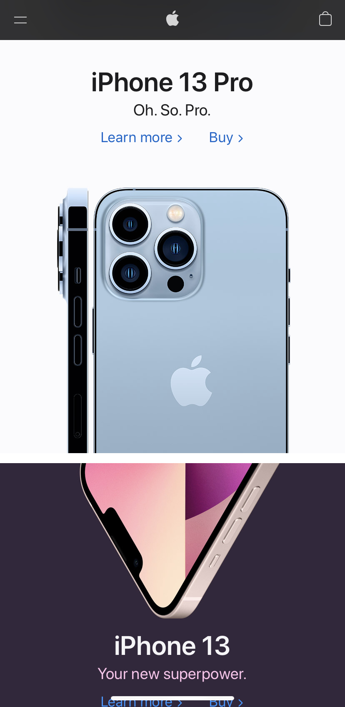
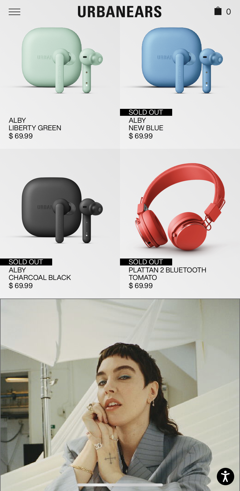

White Space
I think white space is such a great principle of design. As we have heard before, simplicity isthe hardest thing to achieve. Simple websites will always be the way to go. Having a simple but well thought design will create viewer engagement, will make the viewer see more and explore our site because it will be easy to navigate.
Contrast
The website's brand colors are black and white. This creates great contrast when there are images that have lots of colors. What this brand does is that they put sa background color to the text so it is easier to read. Even the logo and the menu are simple, and they use a solid color for them. Using a white background for most elements creates a good contrast with the products and images.
Alignment
Since this website has so much information it needs good alignment. This site centers everything and leaves a good margin on the sides. It also has lines that determine the sections of the page, these help separate sections and the different information.